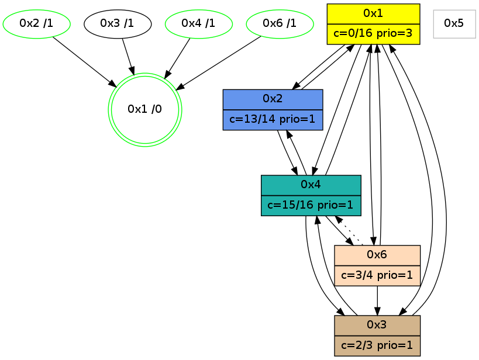

>> << IDX [start] -100 -25 -5 +0 +5 +25 [1155.06153202]
 Previous packets
----------------------------------------------------------------------
1150.038999 beacon01(adaf) #0 coord=01,02,05,03,04,06 cycle=944.0ms assoc
-- color-indic=0 64 9d 78
1150.048959 beacon02(adaf) #0 coord=01,02,05,03,04,06 cycle=944.0ms assoc 64 cc 87
1150.058961 beacon05(adaf) #0 coord=01,02,05,03,04,06 cycle=944.0ms assoc 64 6a ad
1150.068959 beacon03(adaf) #0 coord=01,02,05,03,04,06 cycle=944.0ms assoc 64 f6 89
1150.078960 beacon04(adaf) #0 coord=01,02,05,03,04,06 cycle=944.0ms assoc 64 50 a3
1150.088961 beacon06(adaf) #0 coord=01,02,05,03,04,06 cycle=944.0ms assoc 64 24 bf
1150.100669 [Hello(4): seq=949 sym=2,1,3 sysInfo=hasWarning,MaxColorIndicationCalled,ColoringModeIndicationCalled,MaxColorResponseCalled stat=2:1,3,1,0/1:15,11,7,0/3:1,0,0,0]
----------------------------------------------------------------------
1151.043508 beacon01(adaf) #0 coord=01,02,05,03,04,06 cycle=944.0ms assoc
-- color-indic=0 64 59 17
1151.063468 beacon05(adaf) #0 coord=01,02,05,03,04,06 cycle=944.0ms assoc 64 ae c2
1151.093471 beacon06(adaf) #0 coord=01,02,05,03,04,06 cycle=944.0ms assoc 64 e0 d0
1151.104913 [Hello(3): seq=948 sym=1,4 color=2 sysInfo=hasWarning,MaxColorIndicationCalled,ColoringModeIndicationCalled,MaxColorResponseCalled stat=1:13,15,5,1/4:13,10,0,1]
1151.108832 [Hello(6): seq=863 sym=3,1 asym=4 color=3 sysInfo=hasWarning,MaxColorIndicationCalled,ColoringModeIndicationCalled,MaxColorResponseCalled stat=3:1,0,1,0/1:8,13,1,0/4:2,5,4,1]
----------------------------------------------------------------------
1152.048014 beacon01(adaf) #0 coord=01,02,05,03,04,06 cycle=944.0ms assoc
-- color-indic=0 64 15 a7
1152.057974 beacon02(adaf) #0 coord=01,02,05,03,04,06 cycle=944.0ms assoc 64 44 58
1152.067976 beacon05(adaf) #0 coord=01,02,05,03,04,06 cycle=944.0ms assoc 64 e2 72
1152.077975 beacon03(adaf) #0 coord=01,02,05,03,04,06 cycle=944.0ms assoc 64 7e 56
1152.087975 beacon04(adaf) #0 coord=01,02,05,03,04,06 cycle=944.0ms assoc 64 d8 7c
1152.097975 beacon06(adaf) #0 coord=01,02,05,03,04,06 cycle=944.0ms assoc 64 ac 60
1152.109703 [Hello(4): seq=950 sym=2,1,3,6 sysInfo=hasWarning,MaxColorIndicationCalled,ColoringModeIndicationCalled,MaxColorResponseCalled stat=2:1,3,1,0/1:15,11,7,0/3:2,0,0,0/6:0,0,0,0]
1152.115968 [Hello(1): seq=851 sym=2,4,6,3 color=0 sysInfo=hasWarning,MaxColorIndicationCalled,MaxColorResponseCalled,MaxColorRequestCalled,ColoringModeRequestCalled stat=2:9,3,15,0/4:0,0,0,0/6:7,2,5,0/3:4,0,3,0]
----------------------------------------------------------------------
1153.052518 beacon01(adaf) #0 coord=01,02,05,03,04,06 cycle=944.0ms assoc
-- color-indic=0 64 d1 c8
1153.062479 beacon02(adaf) #0 coord=01,02,05,03,04,06 cycle=944.0ms assoc 64 80 37
1153.072479 beacon05(adaf) #0 coord=01,02,05,03,04,06 cycle=944.0ms assoc 64 26 1d
1153.082480 beacon03(adaf) #0 coord=01,02,05,03,04,06 cycle=944.0ms assoc 64 ba 39
1153.092480 beacon04(adaf) #0 coord=01,02,05,03,04,06 cycle=944.0ms assoc 64 1c 13
1153.102481 beacon06(adaf) #0 coord=01,02,05,03,04,06 cycle=944.0ms assoc 64 68 0f
1153.113476 [STC(1) #0.205 new-neigh,tree-change,inconsistent-stability,stable,to-color d=0]
----------------------------------------------------------------------
1154.057026 beacon01(adaf) #0 coord=01,02,05,03,04,06 cycle=944.0ms assoc
-- color-indic=0 64 a9 65
1154.066987 beacon02(adaf) #0 coord=01,02,05,03,04,06 cycle=944.0ms assoc 64 f8 9a
1154.076987 beacon05(adaf) #0 coord=01,02,05,03,04,06 cycle=944.0ms assoc 64 5e b0
1154.086988 beacon03(adaf) #0 coord=01,02,05,03,04,06 cycle=944.0ms assoc 64 c2 94
1154.096987 beacon04(adaf) #0 coord=01,02,05,03,04,06 cycle=944.0ms assoc 64 64 be
1154.106987 beacon06(adaf) #0 coord=01,02,05,03,04,06 cycle=944.0ms assoc 64 10 a2
1154.117826 [Hello(1): seq=852 sym=2,4,6,3 color=0 sysInfo=hasWarning,MaxColorIndicationCalled,MaxColorResponseCalled,MaxColorRequestCalled,ColoringModeRequestCalled stat=2:9,3,15,0/4:0,0,0,0/6:8,2,5,0/3:4,0,3,0]
1154.120489 [Hello(4): seq=951 sym=2,1,3,6 sysInfo=hasWarning,MaxColorIndicationCalled,ColoringModeIndicationCalled,MaxColorResponseCalled stat=2:1,3,1,0/1:0,11,8,0/3:3,0,0,0/6:0,0,0,0]
1154.123632 [STC(4)->1 #0.205 new-neigh,tree-change,inconsistent-stability,stable,to-color d=1]
1154.125431 [STC(2)->1 #0.205 new-neigh,tree-change,inconsistent-stability,stable,to-color d=1]